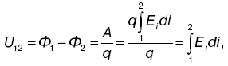

Электрические и магнитные явления связаны с особой формой существования материи – электрическими и магнитными полями и их воздействием. Эти поля в общем случае настолько взаимосвязаны, что принято говорить о едином электрическом поле.
Электромагнитные явления имеют три направления медико-биологических приложений. Первое из них – понимание электрических процессов, происходящих в организме, а также знание электрических и магнитных свойств биологических сред.
Второе направление связано с пониманием механизма воздействия электромагнитных полей на организм.
Третье направление – приборное, аппаратурное. Электродинамика является теоретической основой электроники и в частности медицинской электроники.
Энергетическое поле есть разновидность материи, посредством которой осуществляется силовое воздействие на электрические заряды, находящиеся в этом поле. Характеристики электрического поля, которое генерируется биологическими структурами, являются источником информации о состоянии организма.
Напряженность и потенциал – характеристики электрического поля. Силовой характеристикой электрического поля является напряженность, равная отношению силы, действующей в данной точке поля на точечный заряд, к этому заряду:
E = F/q
Напряженность – вектор, направление которого совпадает с направлением силы, действующей в дан32б ной точке поля на положительный заряд. Напряженность электрического поля выражается тремя уравнениями:
Ex = f1 (x, y, z);
Ey = f2 (x, y, z);
Ez = f3(x, y, z),
где Ех, Еу и Еz – проекции вектора напряженности на соответствующие координатные оси, введенные для описания поля. Энергетической характеристикой электрического поля служит потенциал. Разностью потенциалов между двумя точками поля называют отношение работы, совершаемой силами поля при перемещении точечного положительного заряда из одной точки поля в другую, к этому заряду:

где Ф1 и Ф2 – потенциалы в точках 1 и 2 электрического поля. Разность потенциалов между двумя точками зависит от напряженности электрического поля. Наряду с разностью потенциалов в качестве характеристики электрического поля используют понятие потенциала. Потенциалы в различных точках можно представить в виде поверхностей одинакового потенциала (эквипотенциальных поверхностей). Существующие электроизмерительные приборы рассчитаны на измерение разности потенциалов, а не напряженности.